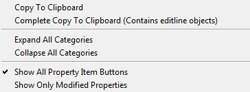

UDN
Search public documentation:
UnrealEdUserGuideJP
English Translation
中国翻译
한국어
Interested in the Unreal Engine?
Visit the Unreal Technology site.
Looking for jobs and company info?
Check out the Epic games site.
Questions about support via UDN?
Contact the UDN Staff
中国翻译
한국어
Interested in the Unreal Engine?
Visit the Unreal Technology site.
Looking for jobs and company info?
Check out the Epic games site.
Questions about support via UDN?
Contact the UDN Staff
UnrealEd ユーザー ガイド
ドキュメントの概要: Unreal Editor の使用法のガイド。 ドキュメント変更ログ: 新規作成; 経時的に管理。はじめに
UnrealEd は、Unreal Engine のコンテンツに関する作業に必要な一連のツールのセットです。レベルデザインを中心に使用されていますが、その内部はゲームプロジェクトのコンテンツをインポートして操作するためのエディタやブラウザで構成されていますこのドキュメントでは UnrealEd の主な機能を説明し、より特化された機能の使用法を解説します。総合パッケージシステム
Unreal Engine 3 エディタにアートをインポートするプロセスは極めて単純なものです。旧バージョンの Unreal エディタに慣れているユーザーなら、コンテンツの表示が大きく変わって いることに気が付くでしょう。古いブラウザに替えて、 Generic ブラウザ という新しいタイプのブラウザを導入し、多量のアセットパッケージ情報を一箇所で扱えるようにしたのです。1 つのパッケージ内でメッシュ、マテリアル、テクスチャなどを見つけることができます。Unreal での作業に精通されている方なら、ここでもう一度驚かれるかもしれません。というのは、メッシュやテクスチャなどのコンテンツが 1 つのパッケージに収められているからです。用語集
レベルやアクタなど、Unreal Engine3 の完全な用語集は、 用語集 ページを参照してください。UnrealEd を使用する
エディタを開く
Unreal Ed を開くには、 Binaries ディレクトリにある目的のゲームプロジェクトの実行ファイル (.exe) を、=editor= パラメータを指定して実行します。 例えば、 ExampleGame というプロジェクトの実行ファイルLTCG-ExampleGame.exe が、コンパイルされて Binaries ディレクトリにあります。この場合、次のコマンドを実行します。
LTCG-ExampleGame editor
レベルの作成
簡単なレベル作成の説明については、 レベルの作成 ページを参照してください。UnrealEd の概要
エディタのレイアウト
メニューバー
File (ファイル)
エディタでのパッケージの保存のガイドに関しては、Editor Package Save Procedure ページを参照してください。現在のレベルの保存
編集されている現在のレベルを保存します。ソース コントロールが有効化されていると、現在のレベルの保存は、まだチェックアウトが済んでいない場合、ソース コントロールからチェックアウトをするように促します。 備考: レベル マネージャを見ることで、どのレベルが現在のものか分かります。～として保存
現在のレベルを異なるファイル名で保存します。保存
すべてのダーティなコンテンツとマップ パッケージを保存します。ダイアログが表示され、どのパッケージを保存したいかを選択することができます。ソース コントロールが有効化されていて、選択されたパッケージがチェックアウトされていないと、もう 1 つのダイアログが表示され、パッケージをチェックアウトするように促します。すべてを保存
すべてのダーティなコンテンツとマップ パッケージを、どのパッケージを保存するかの選択を促さずに保存します。しかしながら、ソース コントロールが有効化されると、ソース コントロールからパッケージをチェックアウトするように促されます。すべての書き込み可能を保存
ディスクに書き込み可能なすべてのダーティなコンテンツとマップ パッケージを保存します。ソース コントロールからのチェックアウトを促しません。すべてのレベルを保存 (強制)
ダーティでなくても、すべての書き込み可能なレベルを保存します。ソース コントロールからのチェックアウトを促しません。Edit (編集)
View (表示)
Brush (ブラシ)
Build (ビルド)
Tools (ツール)
Help (ヘルプ)
ツールバー
ツールバーの詳細は、 エディタのツールバー ページを参照してください。ビューポート
UnrealEd の各種ビューモードの説明は、 ビューモード ページを参照してください。 UnrealEd の各種表示フラグの説明は、 表示フラグ ページを参照してください。ブラウザ
汎用ブラウザ
新規搭載された 汎用ブラウザの機能とフィールドの説明は、 汎用ブラウザ リファレンス ページを参照してください。Actor クラスブラウザ
UnrealEd の各種の Actor クラスの閲覧ガイドとして、 アクタブラウザ リファレンス ページを参照してください。グループブラウザ
UnrealEd におけるアクタの管理ガイドとして、 Groups ブラウザリファレンス ページを参照してださい。レベル ブラウザ
UnrealEd におけるレベル階層の閲覧ガイドとして、 Level ブラウザリファレンス ページを参照してください。参照アセットブラウザ
UnrealEd におけるアセットの閲覧ガイドとして、 参照アセットブラウザリファレンス ページを参照してください。シーンマネージャ
UnrealEd におけるレベル内のアクタの管理ガイドとして、 シーンマネージャリファレンス ページを参照してください。コンテンツタグブラウザ
UnrealEd におけるアセットタグの作成ガイドとして、 コンテンツタグブラウザ ページを参照してください。ログ
エディタ
共通機能
プロパティウィンドウ
プロパティウィンドウは多数のエディタでさまざまな場所に登場し、スクリプトにより公開されている変数をここで編集することができます。多数の変数を持つオブジェクトには、プロパティウィンドウに次図のような検索機能が設けられています。 注意: [Actor Lock] (アクタをロック) ボタンは、プロパティウィンドウがアクタのプロパティを表示しているときだけ現れます。
検索する文字列を入力するか、または [Show only modified] (変更した項目のみ表示) を選択すると、ツリーが自動的に展開され、条件に該当するプロパティが表示されます。このモードでは、展開と折りたたみ機能は使えません。
注意: [Actor Lock] (アクタをロック) ボタンは、プロパティウィンドウがアクタのプロパティを表示しているときだけ現れます。
検索する文字列を入力するか、または [Show only modified] (変更した項目のみ表示) を選択すると、ツリーが自動的に展開され、条件に該当するプロパティが表示されます。このモードでは、展開と折りたたみ機能は使えません。

 オプションメニューには、今までツールバーにあったすべての項目と、メインエディタフレームにあった 2 つのオプション (Show All Windows(すべてのウィンドウを表示) と Show Only Modified(変更のみを表示)) がまとめられています。
オプションメニューには、今までツールバーにあったすべての項目と、メインエディタフレームにあった 2 つのオプション (Show All Windows(すべてのウィンドウを表示) と Show Only Modified(変更のみを表示)) がまとめられています。

検索文字列を消去するには、テキストコントロールで削除するか、赤い X ボタンをクリックします。 EditCondition については、そのサポートをさらに広げて、UnrealScript クラス(.uc) ファイルで例えば次のように項目を追加するだけにしています。var() int DistanceFieldScaleFactor<EditCondition=bUseDistanceFieldAlpha>;EditCondition はブール値を参照しなければならず、そのブール値が True のときだけ有効になります。プロパティウィンドウでは次図のようになります。